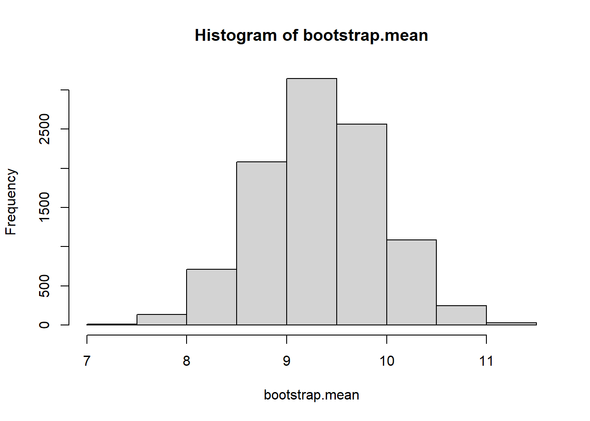
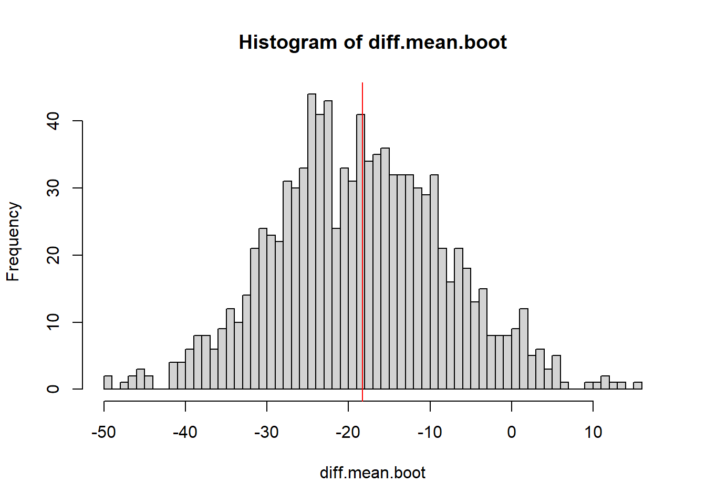

41.1 Simple Example - Estimating the mean of a Weibull Distribution
The Weibull distribution is a flexible random variable distribution which takes a shape and scale parameter. The Expected value of the distribution is not a pretty expression, but it’s true that the expected value of the sample mean is the mean of the RV. Suppose we have some data which comes from a Weibull shaped population
We wish to come up with a 95% confidence interval for the population mean. We’ll use 10000 bootstrapped resamples
B <-10000bootstrap.mean <-vector("numeric")for(i in1:B){ b.sample <-sample(myData, size=length(myData), replace=TRUE) bootstrap.mean[i]<-mean(b.sample) }hist(bootstrap.mean)

quantile(bootstrap.mean, c(.025, .975))
2.5% 97.5%
8.143363 10.523373
#True mean?10*gamma(1+1/4)
[1] 9.064025
What if we wanted to use a MC estimate? Well we’d need to parameterize the weibull distribution. Finding estimates for the shape and scale are… annoying to do by hand. You would have to use software to fit these parameters using some method. The MASS library has a function fitdistr that can be used.
library(MASS)
Warning: package 'MASS' was built under R version 4.2.3
Let’s compare MC estimation vs bootstrapping methods. The difference will become apparent when we make the correct decision about the model to use for the population.
41.3.1 Correctly Identifying the Model
Suppose the data is drawn from a normal distribution. We can actually compare 3 methods of estimating the variance of the population.
The classical statistical approach is to use a chi squared distribution for the sampling distribution of \(S^2\)
The Monte Carlo approach requires us to simulate new data from \(N(\hat{\mu}, \hat{\sigma^2})\)
The bootstrap approach has us re-sample from the initial data.
We’ll simulate using all three of these methods over and over to get coverage estimates as well as precision estimates (average width of the intervals)
MC.coverage <-FALSE; boot.coverage <-FALSE; param.coverage <-FALSEMC.width <-0; boot.width <-0; param.width <-0;for(i in1:500){ myData <-rnorm(15, 37, 2) #The data is actually coming from a normal distr. trueSigma2 <-2^2 n <-length(myData) MC.var <-0 Boot.var <-0 xbar <-mean(myData) sd <-sd(myData)for(j in1:1000){#Assuming the data was drawn from a normal population MC.var[j] <-var(rnorm(n, xbar, sd)) Boot.var[j] <-var(sample(myData, replace=TRUE)) } MC.ci <-unname(quantile(MC.var, c(0.025, 0.975))) Boot.ci <-unname(quantile(Boot.var, c(0.025, 0.975))) param.ci <- (n-1)*var(myData)/qchisq(c(0.975, 0.025), n-1) MC.coverage[i] <- MC.ci[1] <= trueSigma2 & MC.ci[2] >= trueSigma2 boot.coverage[i] <- Boot.ci[1] <= trueSigma2 & Boot.ci[2] >= trueSigma2 param.coverage[i] <- param.ci[1] <= trueSigma2 & param.ci[2] >= trueSigma2 MC.width[i] <-diff(MC.ci) boot.width[i] <-diff(Boot.ci) param.width[i] <-diff(param.ci)}results <-data.frame('method'=c("Classic","MC","Bootstrap"),'coverage'=c(mean(param.coverage),mean(MC.coverage),mean(boot.coverage)),'width'=c(mean(param.width),mean(MC.width), mean(boot.width)))results
Bottom line - if we misidentify the model MC methods can underperform bootstrap. Why do all three of these do so bad though? Small sample size is the answer. Let’s dig further into the effect of sample size on the performance of bootstrap estimation.
41.4 Sensitivity to sample size
We will look at samples of size 10, 20, 30,…, 100 and how the three methods perform on this same population.
The larger sample size allows bootstrap confidence intervals to improve and improve in terms of coverage rate, approaching 95%. This improvement is not seen in the MC or parametric (classical) method. They are both suffering from mis-identifying the population shape, thinking the population is a normal distribution. The bootstrap does not make any population assumptions, and the sample better represents the population as the sample size grows so naturally resampling will provide more representative simulated samples as \(n\) increases.
41.5 Confidence Interval for the difference of two population means
Example: A mean experiment on crickets
In this experiment the treatment group of crickets were starved and we observed the time it took for the starved females to mate with males (they get to eat them after mating - do hungry females mate faster on average?)
We want to estimate \(\mu_{starved}-\mu_{fed}\) using bootstrapping
B <-1000diff.mean.boot <-0#empty vector to store the estimated difference of meansfor(i in1:B){#bootstrap both samples at the same time boot.fed <-sample(Fed, replace=TRUE) boot.starved <-sample(Starved, replace=TRUE)#calculate the difference of means diff.mean.boot[i] <-mean(boot.starved) -mean(boot.fed)}hist(diff.mean.boot, breaks=50)abline(v=mean(Starved)-mean(Fed), col="red")

quantile(diff.mean.boot, c(0.025,.975))
2.5% 97.5%
-38.81519 2.27542
41.6 Bootstrap estimation of Correlation
Generate some data with a certain correlation matrix The variables each have a standard deviation of 1, and a correlation of .6 Thus covariance = \(1\times 1 \times .6\)
They both under-cover, but the second method’s under-coverage is worse.
41.7 Bootstrap Linear Regression
Now let’s bootstrap a linear regression model. Suppose the population has the relationship \[Y = 10 + 4X + \epsilon\] Where \(\epsilon \sim exp(.1)\). We can generate a small sample from such a population.
#Generate data from a model: y = 10 + 4x + eset.seed(2024)x <-runif(25, 0, 10)e <-rexp(25, .1)y <-10+4*x + e
And look at the scatter plot:
plot(x,y)
Note here that the assumptions of the linear model are not true; the errors are not normally distributed but actually exponentially distributed. This becomes a little clearer when we look at the residual QQ plot:
plot(lm(y~x), which=2)
Now we will pretend we don’t know the true parameter values. What can we do with bootstrapping to help us with our estimate of the model? \[ y = \beta_0 + \beta_1 X + \epsilon\] Fit a linear model first - save those coefficients. Fitting the model will be done with least squares estimation. Bootstrapping will be used
as.vector(lm(y ~1+ x)$coeff)
[1] 20.926612 4.256114
Now let’s bootstrap the data, fit the coefficients and repeat, keeping track of all of them
Now construct a bootstrapped confidence interval for the intercept, and a bootstrap interval for the slope.
quantile(intercepts, c(0.025, 0.975))
2.5% 97.5%
13.54361 28.33806
quantile(slopes, c(0.025, 0.975))
2.5% 97.5%
2.961448 6.113239
#compared to the parametric methodconfint(lm(y ~1+ x))
2.5 % 97.5 %
(Intercept) 6.577624 35.275601
x 1.939825 6.572403
Come up with a bootstrap confidence interval for E(Y|x=5.8)
# This is the parametric model fitxy.fit <-lm(y ~1+ x)predict(xy.fit, newdata =data.frame(x=5.8))
1
45.61207
#Using the bootstrapped linear modelb.intercept <-mean(intercepts)b.slope <-mean(slopes)#point estimateb.intercept + b.slope *5.8
[1] 45.72164
#Let's estimate y-hat for every single bootstrapped model fit and use that as a distribution of means / expected values of yb.y.hats <- intercepts + slopes *5.8quantile(b.y.hats, c(0.025, .975))
2.5% 97.5%
40.08676 53.50911
#compared to a parametric estimatepredict(xy.fit, newdata =data.frame(x=5.8), interval="confidence")
fit lwr upr
1 45.61207 38.81064 52.41351
Come up with a bootstrap prediction interval for Y|x=5.8
# NOW BY BOOTSTRAP 95%-PREDICTION INTERVALB <-1000pred <-numeric(B)data <-data.frame(x,y)for (i in1:B) { boot <-sample(n, n, replace =TRUE) fit.b <-lm(y ~ x, data = data[boot,]) pred[i] <-predict(fit.b, list(x =5.8)) +sample(resid(fit.b), size =1)}quantile(pred, c(0.025, 0.975))
2.5% 97.5%
32.55693 102.30715
#compared to a parametric estimatepredict(xy.fit, newdata =data.frame(x=5.8), interval="prediction")
fit lwr upr
1 45.61207 11.14919 80.07496
#What is the true interval for 95% likelihood?10+4*5.8+qexp(c(.025, .975), .1)
[1] 33.45318 70.08879
41.8 Bootstrap Interval for sigma in linear model
We can also use bootstrapping to estimate the sigma. Here however I will go back to a linear model with normal errors. Let’s suppose our population can be described by \[Y = 10 + 4X + e\] Where \(\epsilon \sim N(0, 10^2)\)
#Generate data from a model: y = 10 + 4x + eset.seed(2024)x <-runif(25, 0, 10)e <-rnorm(25, 10)y <-10+4*x + e
A point estimate is obtained from the residual standard error. The summary output from linear regression calls it sigma
xy.fit <-lm(y~x)summary(xy.fit)$sigma
[1] 0.8869751
We can create bootstrap samples from our residuals to come up with a bootstrap distribution for the residual standard error
This dataset is the last post-season game between two NBA teams – Celtics and Heat – at DraftKings. The dataset contains four variables: Player, Roster Position, %Drafted, and FPTS.
Player: NBA players’ names
Roster Position: the position the player held in the DraftKings lineups, whether as Captain (CPT) or Utility (UTIL). DraftKings has a 1.5 multiplication power over the captain.
%Drafted: the percentage of people drafted this player
FPTS: Fantasy Points
This project focuses on the last two variables – %Drafted and FPTS – and tries to understand how strongly they correlate with repeated samplings.
Now let’s repeat this on the draft model; come up with a bootstrapped linear regression model to predict fantasy points (FPTS) from % drafted (X.Drafted). Compare it to the parametric model
Bootstrapped One Sample Test function: What it does is comes up with a bootstraped estimate of the sampling distribution of a test statistic without relying on the central limit theorem or a population model. The t.hat returned is the bootstraped test statistic distribution.
bootstrap=function(x,n.boot){ n<-length(x) x.bar<-mean(x) t.hat<-rep(0, n.boot) #create vector that we will fill with "t" valuesfor (i in1:n.boot){ x.star<-sample(x, size=n, replace=TRUE) x.bar.star<-mean(x.star) s.star<-sd(x.star) t.hat[i]<-(x.bar.star-x.bar)/(s.star/sqrt(n)) }return(t.hat)}
41.10.1 Example: Steel Conduits
Steel conduits are buried for 2 years and the maximum depth of corrosion is measured on each conduit. If the average max penetration exceeds 50 micrometers then the conduits have to be re-engineered.
#Right-tailed test p-value - mean calculates the proportion for memean(MaxPen.boot>=t.obs)
[1] 0.0059
#if it were a 2 tailed testp_upper =mean(MaxPen.boot >= t.obs)p_lower =mean(MaxPen.boot <= t.obs)2*min(p_upper, p_lower)
[1] 0.0118
41.10.2 Two Sample Bootstrap Test
You can use bootstrapping as opposed to permutation testing. The nice thing about this method is the null hypothesis does not have to assume that the populations are equal to each others - we can directly test whether the population means are unequal. We calculate the bootstrapped test statistic distribution by resampling from each sample with the appropriate sample size. This function calculates a t-type statistic, but you can modify it to use any 2 sample test statistic that is useful for quantifying evidence for the alternative hypothesis.
Bootstrap Function from 2 independent samples
boottwo =function(dat1, dat2, nboot) { bootstat =numeric(nboot) #Make Empty Vector for t* to fill obsdiff =mean(dat1) -mean(dat2) n1 =length(dat1) n2 =length(dat2)for(i in1:nboot) { samp1 =sample(dat1, size = n1, replace = T) #Sample From Sample Data samp2 =sample(dat2, size = n2, replace = T) bootmean1 =mean(samp1) bootmean2 =mean(samp2) bootvar1 =var(samp1) bootvar2 =var(samp2) bootstat[i] = ((bootmean1 - bootmean2) - obsdiff)/sqrt((bootvar1/n1) + (bootvar2/n2)) #Compute and Save “bootstrap t” value }return(bootstat)}
41.10.3 Example: A mean experiment on crickets
In this experiment the treatmetn group of crickets were starved and we observed the time it took for the starved females to mate with males (they get to eat them after mating - do hungry females mate faster on average?)
A permutation test would make the null hypothesis assumption that the two populations are identically shaped, and we can see that really is not the case. No need to test that.